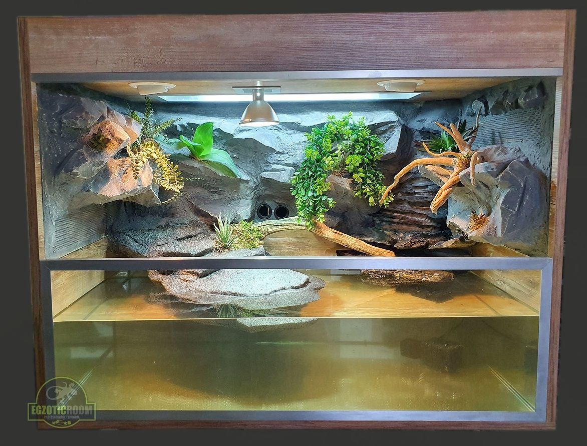

Zarówno dla zdrowia, jak i komfortu żółwia, niezbędne jest zapewnienie odpowiedniej wielkości akwarium. Powinno ono mieć wystarczającą przestrzeń do pływania oraz strefę lądową, gdzie żółw może się wygrzewać. Zainwestuj w dobry filtr, który utrzyma wodę w czystości, oraz grzałkę, aby utrzymać odpowiednią temperaturę. Pamiętaj, że akwarium powinno być regularnie czyszczone, aby zapobiec rozwojowi szkodliwych bakterii.
 |